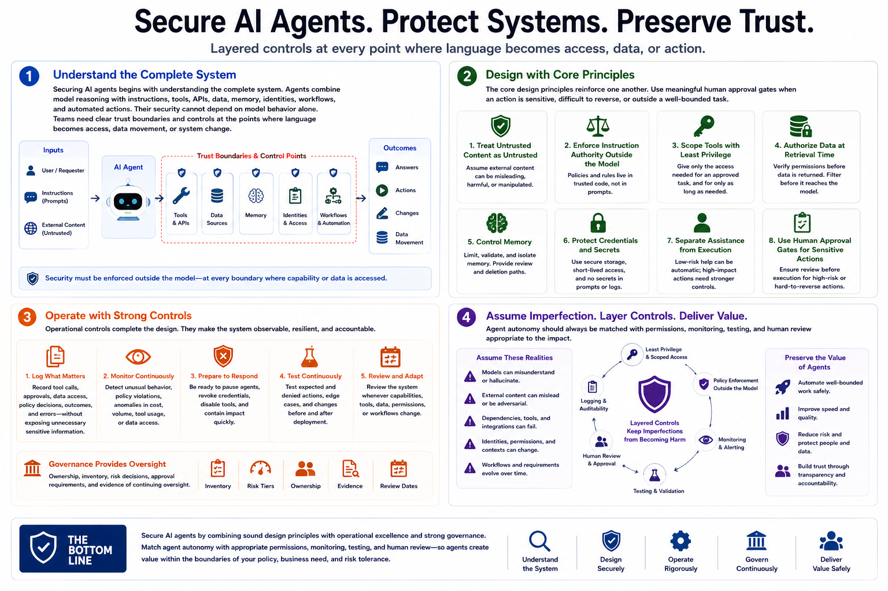

Securing AI Agents
Course Summary and Key Takeaways
Connecting to LMS... Progress: in progress
Version 1.0 | Date: 2026-06-21
This course provides educational information about securing AI agent systems. It is not legal advice, product-specific implementation guidance, or offensive security training.

Narration
Securing AI agents begins with understanding the complete system. Agents combine model reasoning with instructions, tools, APIs, data, memory, identities, workflows, and automated actions. Their security cannot depend on model behavior alone. Teams need clear trust boundaries and controls at the points where language becomes access, data movement, or system change.
The core design principles reinforce one another. Treat external content as untrusted, enforce instruction authority outside the model, scope tools through least privilege, authorize data at retrieval time, control memory, protect credentials, and separate low-risk assistance from high-impact execution. Use meaningful human approval gates when an action is sensitive, difficult to reverse, or outside a well-bounded task.
Operational controls complete the design. Log tool calls, approvals, data access, policy decisions, outcomes, and errors without exposing unnecessary sensitive information. Monitor for unusual behavior, prepare to pause agents and revoke access, test expected and denied actions, and review the system whenever capabilities change. Governance provides ownership, inventory, risk decisions, and evidence of continuing oversight.
Agent autonomy should always be matched with permissions, monitoring, testing, and human review appropriate to the impact. Secure systems assume that models can misunderstand, external content can mislead, dependencies can fail, and workflows can change. Layered controls keep those imperfections from becoming unauthorized or harmful outcomes while preserving the productive value of agents.